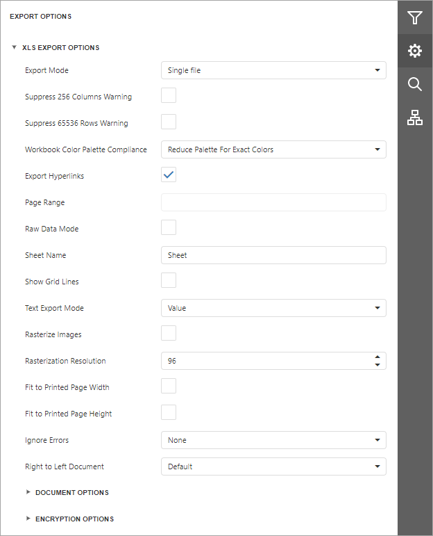

XLS Export Options
Before exporting a document to XLS format, you can specify XLS-specific options in the Export Options panel.

Export Mode
Specifies how a document is exported to XLS.
Suppress 256 Columns Warning
Specifies whether to suppress the exception that raises when trying to export a document to an XLS file with more than 256 columns.
Suppress 65536 Rows Warning
Specifies whether to suppress the exception that raises when trying to export a document to an XLS file with more than 65536 rows.
Workbook Color Palette Compliance
Specifies the color palette compatibility mode with different workbook versions. The workbook palette can store no more than 56 colors. If you select the ReducePaletteExactColors value, original color values are kept, but only the first 56 colors are included in the palette. Choose AdjustColorsToDefaultPalette to degrade the color values to match the 56 standard colors of the default workbook palette.
Export Hyperlinks
Specifies whether hyperlinks should be exported to the XLS document.
Page Range
Specifies a range of pages which will be included in the resulting file. To separate page numbers, use commas. To set page ranges, use hyphens.
Raw Data Mode
Specifies whether to enable the raw data export mode. In this mode, only a document's actual data is exported to XLS, ignoring non-relevant elements, such as images, graphic content, font and appearance settings.
Sheet Name
Specifies the name of the sheet in the created XLS file.
Show Grid Lines
Specifies whether grid lines should be visible in the resulting XLS file.
Text Export Mode
Specifies whether value formatting should be converted to the native XLS format string (if it is possible), or embedded into cell values as plain text.
Rasterize Images
Specifies whether to rasterize vector images, such as pictures, charts, or barcodes.
Rasterization Resolution
Specifies the image resolution for raster images.
Fit To Printed Page Width
Shrinks the width of the exported document's printout to one page.
Fit To Printed Page Height
Shrinks the height of the exported document's printout to one page.
Ignore Errors
Specifies the document errors to be ignored in a resulting XLS file.
Right To Left Document
If you use right-to-left fonts in a report, enable the Right-to-Left Document option to use the right-to-left layout for sheets in the exported XLS file.
Document Options
The Document Options complex property contains options which specify the Document Properties of the created XLS file. Click the complex property's header to access its nested options.

Encryption Options
This complex property allows you to adjust the encryption options of the resulting XLS file.

- Type
Specifies one of the following encryption types:
- Strong (default) type uses the Agile Encryption mechanism.
- Compatible type uses the Standard Encryption that is compatible with Excel 2007.
- Password Sets a password for the exported XLS file. XLS files support ARC4 encryption (except for RC4CryptoAPI). Passwords for XLS files are stored as plain text in report definitions. Ensure that only trusted parties have access to report definition files.